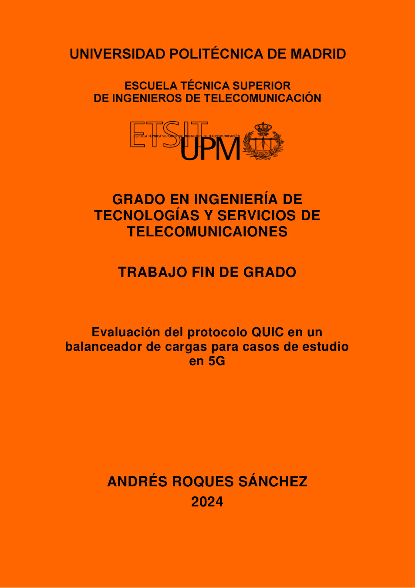

Trabajo Fin de Grado · 2024
Evaluación del protocolo QUIC en un balanceador de cargas para casos de estudio en 5G
Evaluación de QUIC frente a TCP en escenarios de balanceo de carga sobre redes definidas por software y plano de datos programable, utilizando P4 como tecnología habilitante.

Objetivo
Programar el plano de datos para estudiar QUIC en un entorno 5G.
El trabajo estudia cómo integrar QUIC en un balanceador de carga y evaluar sus ventajas frente a TCP, apoyándose en la flexibilidad de las redes SDN y en el lenguaje P4 para programar el tratamiento y reenvío de paquetes.
Se construyen dos escenarios comparables: uno basado en TCP y balanceo ECMP, y otro centrado en tráfico UDP/QUIC. Ambos se despliegan en un entorno virtualizado y se validan mediante pruebas de conectividad, trazas y observación del reparto de tráfico.
Desarrollo
Dos escenarios, una misma base programable.
Entorno P4
Máquina virtual y entorno basado en p4-utils, Mininet, bmv2 y compilador P4 para desplegar los experimentos.
Escenario TCP
Balanceo ECMP con cuatro caminos de igual coste y tablas de reenvío configuradas sobre switches programables.
Escenario QUIC
Integración de QUIC/UDP, incluyendo dependencias como picoquic y picotls, y adaptación del parser del switch.
Validación 5G
Comparación del comportamiento y análisis de aplicaciones potenciales en arquitecturas 5G con planos de datos programables.
Stack